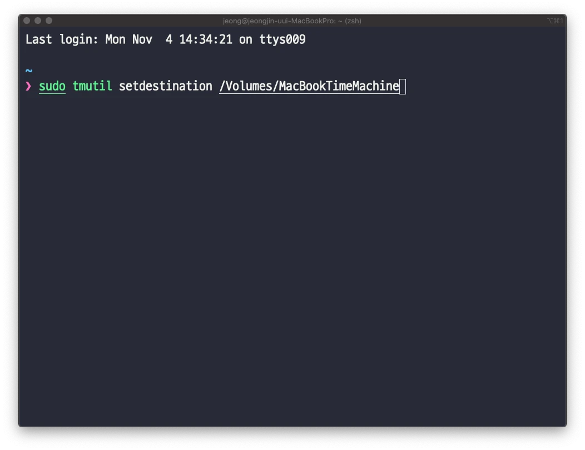

맥 타임머신을 클라우드 서비스에 하기(원드라이브, 구글드라이브, 드랍박스 등)
이 글은 Lhyam Sumal의 HOW TO SAVE APPLE TIME MACHINE BACKUPS TO CLOUD SERVICES LIKE ONEDRIVE 를 번역한 글입니다. 모든 저작권과 권리는 Sumal에게 있습니다.
This article is a translated version of Lhyam Sumal’s article: HOW TO SAVE APPLE TIME MACHINE BACKUPS TO CLOUD SERVICES LIKE ONEDRIVE. All rights goes back to him.
*제가 이해한 대로 번역하였기 때문에 완벽하지 않을 수 있습니다.
타임머신은 굉장한 기능이면서, 제 생각에는 macOS의 최고 기능입니다. 네, 윈도우에도 파일 히스토리가 있지만 타임머신만큼 포괄적인 것은 없습니다. 말 그대로 맥을 복원하고 프로그램을 다시 설치하거나 환경설정을 지정하거나 driver를 사용하지 않고도 이전에 중단한 위치를 정확하게 선택할 수 있습니다!
그러나 백업하려면 외장하드가 연결되어야 합니다. 물론 2018년(원문이 쓰인 날)에는 클라우드 서비스에 백업할 수 있습니다. 저는 마이크로소프트 오피스 365를 구독해서 1TB의 공간을 가지고 있습니다. 문서, 사진, 음악, 비디오 및 데스크탑 폴더가 이미 원드라이브에 백업되는 반면에 내 프로그램들과 설정들은 어떤가요?
놀랍게도 애플은 클라우드 서비스를 사용한 백업 옵션을 타임머신에서 제공하지 않습니다. 하지만 우리는 답을 찾을 것이다. 늘 그랬듯이..(의역)
하지만 그렇게 열심히 찾아보지 않아도 되었습니다. 이전에 타임머신 백업을 네트워크 드라이브에 저장하는 방법을 약간의 수정을 통해서 할 수 있는 방법을 기사로 썼습니다. 다음은 타임머신을 원드라이브, 구글드라이브, 아이클라우드 또는 원하는 클라우드 서비스에 저장할 수 있는 방법입니다.
어떻게 작동하는가?
이 글의 목적상 원드라이브를 사용하고 있지만 다른 클라우드 서비스도 동일한 방식으로 작동합니다. 맥에서 이미 클라우드 동기화 서비스를 사용하고 있다고 가정하면 다음 단계를 따르는 것이 매우 간단하며 몇 분 정도 걸립니다.
가상 드라이브를 생성하여 클라우드 서비스에 저장한 다음 맥에 마운트 해야 합니다. 타임머신 설정을 약간 조정하면 맥에서 가상 드라이브를 인식하고 자동으로 저장을 시작합니다.
macOS가 변경 사항을 가상 드라이브에 저장할 때마다 원드라이브 앱은 해당 변경사항을 클라우드에 다시 동기화합니다.
가상 드라이브 생성
가상 드라이브의 장점은 전체 1TB를 가상 드라이브에 할당된 공간으로 지정하더라도 실제 차지하는 공간은 그 안에 포함된 파일의 크기만큼만 됩니다.
클라우드 드라이브 폴더 내에 디스크 이미지를 저장해야 합니다. 맥에서 원드라이브 폴더를 찾고 디스크 이미지를 여기에 저장했습니다.
- 디스크 유틸리티를 엽니다. 간단하게 Spotlight나 Alfred를 이용해 검색할 수 있습니다.- 파일 메뉴에서 새로운 이미지(New Image) > 빈 이미지(Black Image)를 선택합니다. (단축키 cmd+n)
- 클라우드 폴더를 찾아서 가상 드라이브 이름을 설정합니다. (MacBookTM)- 가상드라이브의 최대 용량을 입력합니다. 저의 경우 200 GB를 입력했습니다.- 포맷을 Mac OS 확장 (저널링)로 선택합니다.
- 암호화는 사용해도 되고 안 해도 되는데 사용한다면 128-bit 를 선택합니다. 그러면 암호를 입력하는 창이 뜨는데 복구할 때 사용하기 때문에 잊어버리면 안 됩니다.
- 파티션을 단일 파티션으로 설정합니다.
- 마지막으로 이미지 포맷을 분할 번들 디스크 이미지(sparse bundle disk image)로 선택합니다.
- 디스크 이미지 사이즈를 체크합니다. - 저의 경우 이미지 포맷을 변경하니까 사이즈가 기본으로 변경되어 다시 수정하였습니다.
완료하였다면 디스크 유틸리티를 종료 할 수 있습니다.
가상 드라이브 마운트
저의 경우 자동으로 가상 드라이브가 마운트 되고 MacBookTM이 나타났습니다.
자동으로 마운트 되지 않을 경우 파인더를 열고 디스크 이미지를 저장한 위치로 이동하여 두 번 클릭하면 됩니다.
가상 드라이브를 인식하도록 타임머신 구성
이 파트는 조금 까다로워 보이지만 실제로는 간단합니다.

터미널을 엽니다. (저와 다른 창이 떠도 괜찮습니다.)
아래의 명령어를 입력합니다. 여기서 {mounted-disk-image}는 마운트 된 디스크의 이름입니다.
sudo tmutil setdestination /Volumes/{mounted-disk-image} #저는 MacBookTimeMachine으로 했으니까 위의 이미지 처럼 입력하였습니다.Enter를 누르세요.
비밀번호를 입력하라고 나오면 입력하고 Enter를 누르세요.
입력이 완료되면 exit를 눌러 터미널을 종료합니다.
타임머신 설정
거의 다 끝났습니다. 👏
시스템 환경설정에서 타임머신을 열면 새로 만든 드라이브가 자동으로 나타납니다.
타임머신에서 OneDrive 폴더 제외
이 부분은 권장하는 파트입니다. 그렇지 않으면 클라우드 동기화 폴더 포함하여 타임머신이 백업한 다음에 클라우드 동기화를 진행합니다.
폴더를 제외하려면
- 타임머신 환경설정에서 옵션을 클릭합니다.
+아이콘을 클릭하고 클라우드 폴더를 선택합니다. (예: Onedrive 또는 googledrive)- 저장을 클릭합니다.
그리고 당신은..
타임머신이 가상드라이브 백업을 시작하고 원드라이브에 해당 변경 사항을 동기화할 것입니다. 더는 외장하드를 검색하거나 네트워크 서버 연결을 기다릴 필요가 없습니다.
백업을 다운받기 위해서 조금 고통스럽겠지만 저를 믿으세요!
📝코멘트
백업을 진행하다 보면 매우 느린 속도에 좌절하게 되지만 이 속도를 개선해 줄 방법이 있습니다. 아래의 링크를 참고해주세요.